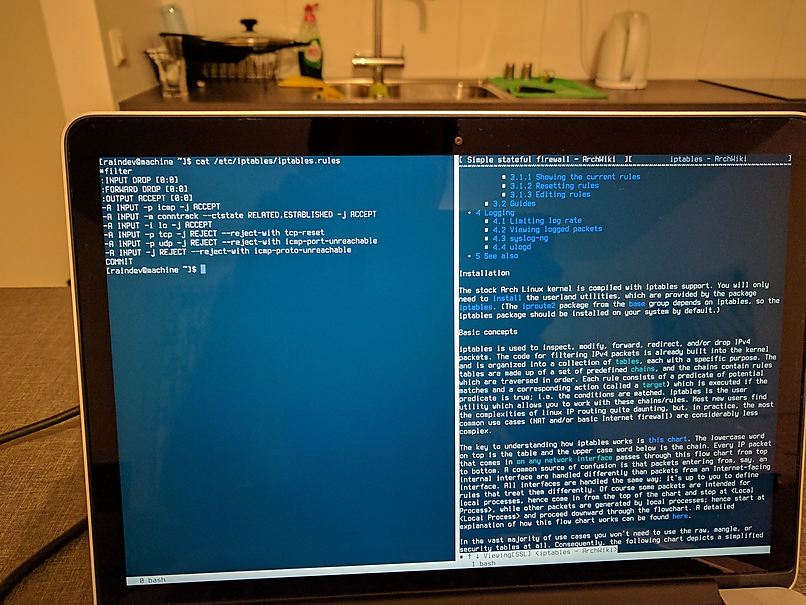

Build Yourself Arch Linux, Part 2
Part 2: Getting Work Done from Console
This is the second part of the series of articles (part 1, part 3) about setting up Arch Linux on my MacBook. The main goal of this part is to make the installation actually useful to do some work. In some sense, I want to bootstrap the series to be able to work on the posts under Linux. Disclaimer: I won't get to setting up graphical environment in this part; while it's possible to do everything from this article after installing a graphical environment, I've decided to try how far can I get without one.
Unprivileged user
It is not a good idea to use a computer as root user all the time. Here is how to create a new unprivileged user and set its password. Beware that a user's home directory is created from a template called skeleton and the default skeleton (/etc/skel) contains only a few basic dotfiles templates like .bashrc. It may be confusing if you used to see bunch of predefined media directories in your home catalogue.
sudo
sudo is another recommended security measure. It is not pre-installed, you'll need to get it with pacman. I used group wheel to give access to sudo. The newly created user needs to be added the group. visudo is the way to control access to sudo command. Besides giving wheel members privileged access I also allowed reboot/shutdown to be performed without need for the password. To do that while editing /etc/sudoers I have uncommented the line with Cmd_Alias for REBOOT and added the following line:raindev ALL= NOPASSWD: REBOOT. Now I can run sudo poweroff to shutdown my laptop and won't be asked for the password. The same way user can be given a permission to execute other commands requiring privilege escalation without a password.
polkit
Another option to access power management without need for a password is polkit which is a framework for granular access management. Given polkit is installed and running (I had to reboot before systemctl start polkit succeeded), you'll be able to use systemctl reboot/poweroff/suspend without password given that there're no other users logged in.
Automatic login
Considering that disk encryption password is required to boot there's no point in having to enter user's password every time to log in. The program that manages virtual terminals and their access is called getty. Read ArchWiki for how to configure automatic login for getty.
Unplugging the laptop
Wi-Fi
To get Wi-Fi working a driver is needed. The problem is my Wi-Fi card (Broadcom BCM4360) is not supported by the kernel itself and there's no driver available from official Arch Linux repositories. Good news are that almost any package you may need is available from Arch User Repository if not found in the official repositories. broadcom-wl-dkms is the package we need (update: has been moved into the official community repository). It's a good idea to install DKMS version of the driver to not have to recompile it manually after each kernel upgrade. You'll need to get dkms package before installing the driver. There're two ways of installing AUR packages: manual or using AUR helpers. I use pacaur but installing packages manually is not that hard and inspecting package files can provide useful insights when there're some problems. Do not forget to install base-devel package group as the build will fail without it.
When the wireless driver is installed the only thing left is to get dialog and wpa_supplicant packages which are needed to be able to use wifi-menu tool. Connecting to wireless networks is dead simple: sudo wifi-menu. Give the profile meaningful name, it will be possible to quickly activate it using sudo netctl start <profile>.
Brightness and battery level
Besides Wi-Fi two things where bothering me while working off the table: how to change screen brightness and check battery charge. The answer is using files :) After some exploration in /sys/class I've found /sys/class/backlight/intel_backlight/brightness (or /sys/class/backlight/acpi_video0/brightness if you prefer percentage instead of absolute brightness value) and /sys/class/power_supply/BAT0/capacity. They are just files, you can read them and write to them (battery charge is obviously read-only). Don't be afraid to look into your /sys/class, there're lots of interesting stuff. You can enable adjustment of brightness without need for a password the same way as done for power management above using visudo. E.g. I use cat 200 > sudo tee /sys/class/backlight/intel_backlight/brightness (notice placement of sudo), therefore NOPASSWD should be set for tee /sys/class/backlight/intel_backlight/brightness.
Color scheme and cursor
On the laptop's screen I have found colors to be hard to read (especially in command line browsers). I have found Solarized color scheme adapted for Linux virtual console here. It made the terminal much more comfortable for the eyes. While at console configuration, I have also changed cursor to not blink and to be a nice solid light grey block. Read this StackOverflow answer for a quick solution (I have used 16;0;224 cursor configuration values); read man page for terminfo for details.
Blogging toolchain
The first thing I have decided to configure my new Arch Linux installation for is blogging. I use Hakyll static website generator and host my blog using GitHub Pages.
Web browser: w3m
To work on my blog I need a web browser obviously. Out of curiosity I have decide to see how far can I get using a terminal browser. I have tried three options: Lynx, ELinks and w3m, and settled on the third one. Lynx feels the simplest one of the three. It would be fine but pages took ages to load for some reason. ELinks is really nice and full featured but didn't worked well with suspending to background and resuming (Ctrl-Z and fg respectively). The program froze after resuming (if any other command was run after suspending it) which breaks my command line workflow. w3m works great for me: loads pages really fast, works seamlessly with backgrounding/foregrounding, even has support for multiple tabs and bookmarks. It is not the most user friendly program but I'll get used to it.
Text editor: Vim
Vim is my text editor of choice. While installation itself is dead simple, there're few caveats. To use Vim in all the places where text editor is needed set VISUAL and EDITOR environment variables (e.g. export VISUAL=/usr/bin/vim in ~/.bashrc). There're also special cases as well. visudo doesn't use the environment variables to determine text editor by default out of security concerns. Add Defaults editor=/usr/bin/vim to sudoers file to use Vim. w3m uses an external editor for text field input. To make it pick up EDITOR environment variable you'll need to go to its configuration by pressing o and clear Editor configuration field. Now it should be safe to remove vi package.
Terminal multiplexer: GNU screen
To be able to quickly switch between w3m, Vim and shell I use GNU screen. I had two issues with screen: default command prefix Ctrl-A is clashing with the bash movement to get to the beginning of the line and screen is flashing in place where you'd usually hear bell sound in a graphical terminal emulator (e.g, backspacing en empty line). The fixes are accordingly escape ^Jj (changes command prefix to Ctrl-J) and vbell off in ~/.screenrc. Because of the way console auto login is set up it's not possible to lock tty1 by exiting it. GNU screen's lock can be used instead (x in the default keybinding). In the future I'd like to try tmux instead of screen but I'm not up for learning and configuring it now.
Using multiple virtual terminals is a simple alternative option to a terminal multiplexer. To switch between terminals use Alt + right/left arrow. To scroll back Shift-PageDown/Shift-PageUp (see here for more details). Even if you do use a terminal multiplexer there're boot messages in console (printed before screen for example is launched) you might want to scroll back and read. To not lose any boot messages I've added fbcon=scrollback:512k to the kernel boot options in systemd-boot entry configuration which expands virtual terminal buffer.
Hint: if your virtual terminal appears to be stuck, it might be that you unintentionally paused console output by Ctrl-S, to resume use Ctrl-Q.
Version control: Git and SSH
To get access to source of my blog on GitHub and to be able to publish updates I need Git. There're no issues to obtain Git itself using pacman. I use SSH keys to authorize access to my GitHub account without entering password every time. To get it working an SSH client is needed and a key needs to be generated (I usually don't reuse SSH keys across environments) and added to GitHub. To get an SSH client I have installed openssh package. See Git documentation and GitHub guide how to generate an SSH key and add it to GitHub.
GPG
I use GPG to sign my Git commits which is already installed as part of base package group. There're a few caveats to consider however. By default GPG uses a graphical password prompt provided by pinentry program, see here how to change it curses-based version that works in console. It is also required to set GPG_TTY environment variable to $(tty) for pinentry-curses to work properly. You might need to restart GPG agent for the changes to have effect. See this gist (Method 2) on instructions how to move the GPG keys to your new environment. If you want to wipe the USB stick used to copy the key it can be done using shred command.
Static blog generator: Hakyll
To build my Hakyll blog generator all I needed were ghc and stack packages. No additional configuration were needed. All of the post above was already written under Arch Linux in virtual console.
Fix Meta key (Workman keyboard layout specific)
I rely heavily on bash movement commands. E.g. M-b/M-f to move by words backward and forward. "M-" prefix stands for "Meta" which corresponds to Alt on contemporary keyboards (same as Option on Apple's keyboard). In terminals Meta modifier is usually sent as Escape preceding a letter. Because of this fact it makes no difference in terminal to press Alt-b or Escape followed by b. For some reason bash movements worked properly with Escape key, but not with Alt keys. First I suspected that Alt was not configured properly to send escape prefix. setmetamode command revealed that Meta is in escape prefix mode. Than I noticed that Meta-b behaves exactly as Meta-t and Meta-f like Meta-u. In Workman layout key t is mapped to letter b, the same for u and f. Given the fact I concluded that something is wrong with my Workman keymap. Indeed Alt modifiers weren't mapped properly and used definitions from QWERTY layout. It was quite hard to find proper documentation about kbd keymaps online. ArchWiki article is a pretty good overview and all the details are available in keymaps man page which is written very thoroughly. You can find the patch fixing Meta characters on my GitHub.
Disable MacBook startup sound
OS X stores audio volume level in an EFI variable that is used during early boot to produce appropriately loud annoying sound. EFI variables are already mounted as files under /sys/firmware/efi/efivars/. To disable startup sound from Linux you'll need to set the volume to zero. See ArchWiki instructions. For safety reason most of the variables are immutable. To be able to rewrite the volume do chattr -i /sys/firmware/efi/efivars/SystemAudioVolume-7c436110-ab2a-4bbb-a880-fe41995c9f82 as root. You can install efivar to check the value of the EFI variable. It won't harm to change the modified variable back to immutable (chattr +i).
Suspend issues
While closing lid to suspend worked well out of box, with systemctl suspend the laptop was brought to sleep only for a few seconds and than waked up. This is not new problem, I've found a solution on ArchWiki. cat /proc/acpi/wakeup will give you a list of devices allowed to wake up the machine. To prevent a device from waking up the system write a device name from the first column to the file (e.g. echo LID0 | tee /proc/acpi/wakeup for lid). In my case it was the lid and not a USB controller as mentioned on the wiki causing issues. I haven't figured a way to create an udev rule for the laptop lid so I created a simple systemd unit to disable it during startup (see this StackOverflow answer).
The drawback is that closing lid to suspend will no longer work. If you want to use both lid and systemd to suspend, see this Arch Linux Forum post to toggle LID wakeup on the fly only for suspend (I haven't tried it). To mitigate the problem I've assigned my power button to suspend laptop instead of shutting it down, instructions are available here. Bonus point is that I won't unintentionally halt the laptop by hitting the power button accidentally.
Network autoconfiguration
I have noticed (using juornalctl -p3 -b) that there's a timeout error when trying to start Ethernet adapter device (sys-subsystem-net-devices-enp0s20u1.device). Using systemctl list-dependencies --reverse sys-subsystem-net-devices-enp0s20u1.device I have figured out that it's dhcpcd triggering initialization of the missing device. It kind of makes sense as I do not have it plugged in when working of the battery and have dhcpcd@enp0s20u1.service enabled (see first part of the guide). At first I have added a condition ConditionPathExists=/sys/class/net/%i to dhcpcd systemd unit file (/usr/lib/systemd/system/dhcpcd@.service) to only start it if the network device is present. Later on I have decided that I don't want network connection to be established until started explicitly and disabled the dhcpcd service. The changes done to the dhcpcd systemd unit in the first part of the tutorial can also be reverted (by reinstalling the package, e.g.).
Backup
Following the Arch Wiki recommendations I have set up a basic backup to a USB flash stick. Backup includes a few top level directories (/boot, /etc, /home, /data, /usr/local, /var) copied over using rsync, lists of native and foreign (coming from outside of Arch Linux core package repositories, e.g. from AUR) pacman packages and LUKS-encrypted partition header. There's still plenty of room for improvements in my backup scheme: encryption, more granular or more complete file backup, backup to multiple places (now I can loose a backpack with both my laptop and the backup USB stick), backup scheduling, automated restore to name a few.
To ease mounting of the backup USB stick I've added the following line to /etc/fstab:
UUID=8e713409-6935-4206-9476-067df8dee417 /mnt/aquamarine ext4 user,rw,noauto,nodev,nosuid,noexec 0 0
user option gives not root user permissions to mount the file system (see man 8 mount). nodev,nosuid,noexec described below in the security section. noauto disables automatic mounting. Now mount /mnt/aquamarine doesn't require privileges escalation.
Package management
pacman mirrors
See instructions how to rank pacman repository mirrors by speed. After obtaining list of fastest mirrors I've excluded all the mirrors that are not 100% synced accordingly to the Mirror Status page. Also I have removed all the http sources. I have no doubts about Arch package signing practices but I don't like leaking my package usage habit in plain text. It might make an intruder's job easier if he will know exactly what versions of what software am I running and when do I update it.
pacman cleanup
While I was experimenting with different packages some of transitive dependencies might be left behind. Fortunately, pacman remembers the reason for package installation. To query all the packages installed previously as dependencies do pacman -Qdt.
By default pacman will keep all the packages that were installed at some point of time. It makes sense to clean them up sometimes. There's a handy script for exactly this task called paccache. I'm not low on disk by any means, it doesn't make sense for me to clean the cache aggressively. It's there for a reason after all (e.g. I may need to downgrade a package which is much easier having it in the cache). It's possible to clean up only uninstalled packages, that's what I did. The trick is you'll have to tell paccache to keep 0 versions of package (see -h on details) otherwise it will not remove all the uninstalled package versions.
Security
Following security recommendations I have added nodev and nosuid mount options to /etc/fstab for /var, /home, /data and /boot. The idea is that those file systems have not a need to expose physical devices (nodev) nor to escalate permissions to the binary owner/group in case suid flag is set (nosuid). Usually those capabilities needed only for root file system. For /data and /boot I have also set noexec which disables binary execution from those partitions as these are not intended to store any programs.
To make files readable/writable/executable only for author user by default I have replaced umask 022 with umask 077 in /etc/profile. The former gave read access by default to the user's group and other users which is not really necessary. After or week or so abandoned this idea as it resulted in more commands requiring root to execute which is an unpleasant security implications (probably outweighing the benefits).
Because running an advanced text editor (e.g. vim) as root is is equivalent running a shell as root which ought to be avoided when possible. To mitigate the problem sudoedit command exists which will copy over the file after editing it as an unprivileged user. sudoedit will use editor configuration from /etc/sudoers so we're all set.
DNSSEC
DNSSEC to DNS is (roughly) what HTTPS (SSL) is to HTTP. Both SSL and DNSSEC will ensure authenticity of the received information from a web server and a DNS server respectively. The same as with HTTPS, DNS will protect only domains that are explicitly using it. The difference is that DNSSEC is only about verifying and not about encrypting data. There's really not that many reasons to encrypt DNS traffic as the only sensitive information it contains is names of the resources you connect. This information will be revealed to your ISP anyway when you'll send a network request to the resource which IP address you've identified via DNS. The only solution to keep network resources you connect to private is some sort of VPN.
The problem is, unlike SSL, DNSSEC is not widely supported by networking software so the easiest to employ it is to use a DNS proxy. I've chosen to install local Unbound DNS server that supports DNSSEC and also does caching. Unbound is lightweight (it will be running on my laptop) and configuration is very simple. To install Unbound with DNSSEC support you'll need unboud and expat packages (the second is probably installed already). I've stripped down the /etc/unbound/unbound.conf file of configurations set to defaults and made it listen to IPv6 localhost and prefer IPv6 when performing queries (to be ready when IPv6 will take over the world):
server:
trust-anchor-file: trusted-key.key
interface: ::1
prefer-ip6: yes
This is enough to use Unbound but ArchWiki also recommends to update information about the root DNS servers rather than relying on defaults, see here. unbound-checkconf can be used to verify configuration for errors. To run Unbound I've just started and enabled unbound systemd service. See this section to verify that DNSSEC is working.
To use my own DNS resolver it needs to be specified in /etc/resolv.conf as nameserver ::1 (actually that's the only required parameter for the file), see man 5 resolv.conf. Some networking software (dhcpcd and netctl, e.g.) might change resolv.con in runtime which is not desirable in my case (related ArchWiki section. To prevent that from happening I've grepped though my netctl profiles (/etc/netcl/) for DNS= to make sure no one is overriding DNS configuration (see man 5 netctl.profile) and added nohook resolv.conf to /etc/dhcpcd.conf (see man 5 dhcpcd.conf). Furthermore, to make sure that the file wouldn't be modified unintentionally, I've made it immutable (chattr +i).
Firewall
I have set up firewall manually using iptables. My configuration is basically a simple stateful firewall as described by ArchWiki with some minor modifications. I've used an example file from /etc/iptables/simple_firewall.rules as a template to configure my firewall.
Default policy for INPUT and FORWARD chains is DROP and ACCEPT for OUTPUT. There're five custom chains in my configuration: logdrop - logs and drops packets; logrejectproto, logrejectport, logrejectrst - log and reject packets with respectively ICMP protocol and port unreachable and TCP reset; limitlog - will log packets rate limiting it (to 5 packets per second, logging first 5 packets from each burst). All the rules I have are for INPUT chain: accept localhost packages, accept packets from RELATED/ESTABLISHED connections and drop from INVALID, accept ICMP pings. After these rules is the point where I can add rules for opening ports if I'll need to. Rest of the packets are rejected with appropriate responses by jumping to the custom chains described above: resets for TCP, port unreachable for UDP and protocol unreachable otherwise.
IPv6 firewall rules are mostly the same as IPv4 rules. Modifications include replaced ICMP ping rule with ICMPv6 ping rule, the two ICMP rejects need to be replaced with ICMPv6 icmp6-adm-prohibited. Arch Linux wiki article also has recommendations how to allow Neighbor Discovery Protocol and other IPv6 peculiarities.
After configuration both iptables and ip6tables systemd services need to be enabled.
Utilities
Nothing fancy here, just a few small and useful programs I've installed along the way:
tree- draw a tree of files and directoriesshellcheck- check shell scripts for common pitfalls and mistakespacutils- providespaccheckutility to see what pacman packages were modified after installationpkgstats- help Arch Linux maintainers by sharing anonymous package usage stats. I had to mask its systemd timer (systemctl mask pkgstats.timerto disable automatic uploads of the reports.wget- command-line file downloader
Rust
Pretty much boils down to installing rustup which is available from the official repositories. See rustup -h for details on installing, updating and selecting default Rust toolchain. The wiki page on the subject is pretty extensive and detailed as well.
Caveats
I'd like to change GNU screen's command prefix to Ctrl-I as it is on the home row of Workman layout (unlike Ctrl-J) but for some reason Tab gets intercepted in that case and do not work for bash completion.
To reconnect to different WiFi network wifi-menu should be used. netctl start <profile> fails because interface is already up.
Conclusions
Getting some work done from virtual console is definitely possible and it's definitely useful to be able to do so. A lot of things work in a different way in the virtual console and you'll have to adapt (e.g. scrolling back, copying-pasting, working with multiple shells) but it's not that inconvenient once you've learned your way around. I'll probably use a graphical terminal emulator even for my command line work from now on. Main limitation I've run into is unavailability of large bitmap fonts. Even the largest I've found so far (Terminus 32) is a bit too small for me. Going further this route I'd probably needed to make my own console fonts. I've got an impression that it would be more convenient to work with a virtual console on a desktop because of availability of full size keyboard (scollback e.g. relies on PageUp/PageDown keys) and lower screen pixel density.
Credits
As well as in the first part of the guide I've relied heavily on ArchWiki in particular General recommendations section.
